01 — Departure
Learning that travels with you.
Training, certification and university placement in Türkiye — designed around your group, from your home country all the way to campus.
02 — Where it all began
It started with 47 people. Ankara, April 2019.
Back in April 2019, 47 young professionals from Nigeria completed our Agribusiness Entrepreneurship Program in Ankara. That group was the milestone that started this journey — and more than 500 participants from across Africa, Asia and Europe have followed since.
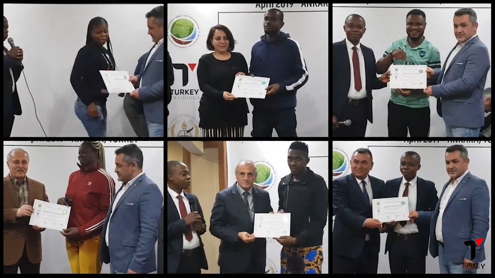
500+Alumni worldwide
20+Countries represented
150+University partners in Türkiye
Flight deckClick the emblem to change courseTap the emblem to change course
01/ 06Study in Türkiye
Your future starts in Türkiye.
We guide students and institutions through every step of studying in Türkiye — with 150+ university partners and honest, insider support.
Start with studyingLeadership & Management
10-Day Mini MBA
10 days · Ankara / Istanbul · Certificate
An intensive tour of modern management: strategy, finance for non-financial managers, marketing, operations, people leadership and change. Built around real case work and a final group presentation.
All 73 programmesHover to previewTap to preview, tap again to open
- 10-Day Mini MBA
- Management & Leadership 1
- Management & Leadership 2
- Mastering Project Management
- Successful Management for Business Achievement
- EU Project Management
- Implementing Ethics
- E-Government
- Digital Government in Public Service
- Judicial Decision-Making
- Anti-Corruption & Integrity Management
- Strategic Leadership & Operational Excellence in Oil & Gas Logistics
- Advanced Principles in Ports & Marine Terminals Management, Operations & Safety
- Maintenance Planning & Work Control in Oil & Gas Ports and Terminals
- Shipbuilding & Naval Architecture — 1 Month Intensive
- Shipbuilding & Naval Architecture — 3 Month Advanced
- Sustainable Agriculture & Farm Management
- Agricultural Entrepreneurship
- Agribusiness Entrepreneurship Certificate
- Agri-Tech Innovation & Marketing
- Agricultural Economics
- Poultry Farming Entrepreneurship
- Aquaculture Entrepreneurship
- Heliciculture (Snail Farming) Entrepreneurship
- Animal Farming & Livestock Management
- Medical Certificate Programs
- Emergency Medical Technician (EMT)
- Nursing Assistant
- Midwifery
- Teachers' Training Program
- Educational Leadership & School Management
- Higher Education Leadership & Internationalisation
- ICT Training Program at Karadeniz Technical University
- Information Technology Governance
- Cyber-Security Awareness for Institutions
- Entry-Level Tourism Course
- M.I.C.E. Management Program
- Travel Management Program
- International Michelin-Level Culinary Executive Program
- Turkish Cuisine Term
- World Cuisine Term
- Light Aircraft Pilot Licence – LAPL
- Private Pilot Licence – PPL
- Aviation English Radiotelephony Training
- Aviation English Language Proficiency Preparation
- Pilot Hour Building Programme
- Night Rating Flight Training
- Aircraft Differences Training
- Garmin GTN650 Navigation & Radio Systems Training
- Pilot Refresher & Regulatory Update Training
- Flight Dispatcher & Airline OCC Training
- Cabin Crew Professional Training
- Airport Airside & Ground Operations
- Airport Ramp Agent Training
- Passenger Services & Check-In Agent Training
- Small Airport Operations Management
- Aircraft Maintenance Planning – Part 145 / CAMO / CAO
- Aviation Procurement & Spare Parts Warehousing
- Information Technology for Aviation Organisations
- Safety Management System – SMS & Risk Assessment
- Foreign Object Damage Prevention – FOD
- Dangerous Goods Training – Aviation
- Human Factors in Aircraft Maintenance – Initial
- Aircraft Fuel Tank Safety (incl. Continuation)
- Crew Resource Management – CRM (Initial / Continuation)
- EWIS – Electrical Wiring Interconnection System
- EASA Regulatory Framework & Basic Regulation Training
- Basic Airworthiness Inspector – International Regulations & EASA Requirements
- CS-25 Large Aeroplane Certification Training
- Aviation Auditor – Auditing Management & Techniques (incl. Recurrent)
- EN 9100 Quality Management System for Aerospace Organisations
- Technical English for Aviation
- Aviation Instructional Techniques – Train the Trainer
03 — Study in Türkiye
From your home country all the way to campus.
-
We partner with 150+ Turkish universities and guide you through every step — from choosing a program to landing at the airport.
Keep scrolling → - WPT 01
Expert counseling
One-on-one guidance to choose the right university, city and program for your goals.
- WPT 02
Applications in one place
All the application information and paperwork you need, organised and managed for you.
- WPT 03
Insider grant knowledge
We know where the scholarships and grants are — and how to give you the best shot at them.
- WPT 04
Visa assistance
Step-by-step support with your student visa so nothing is left to chance.
- WPT 05
Complete study plan
A clear, end-to-end plan from application to arrival and settling in.
-
Please note: admission is never guaranteed — students must meet the academic requirements of their chosen university. We maximise your chances, but final decisions rest with the institution.
04 — Flagship division · now enrolling
Pilot training & aviation courses in Türkiye.
Become a pilot with internationally oriented flight training — PPL and LAPL licences, hour building, aviation English, airline and airport operations, maintenance and aviation safety. Hands-on training delivered in Türkiye and Italy for individuals, airlines, airports and institutions.
- 01
Private Pilot Licence PPL
Ground theory + in-person flight training toward your first pilot licence.
- 02
Light Aircraft Pilot Licence LAPL
A structured, accessible route into flying light aircraft.
- 03
Hour Building & Advanced Flight
Build flight hours, night flying and advanced handling for your next rating.
- 04
Aviation English & Radiotelephony
ICAO-oriented aviation English and radiotelephony for flight crew.
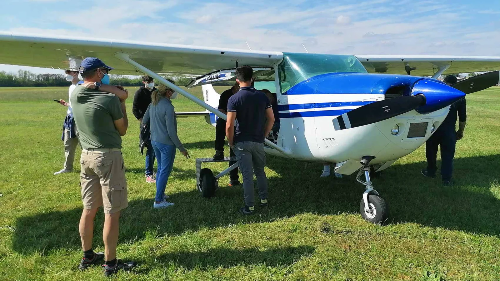
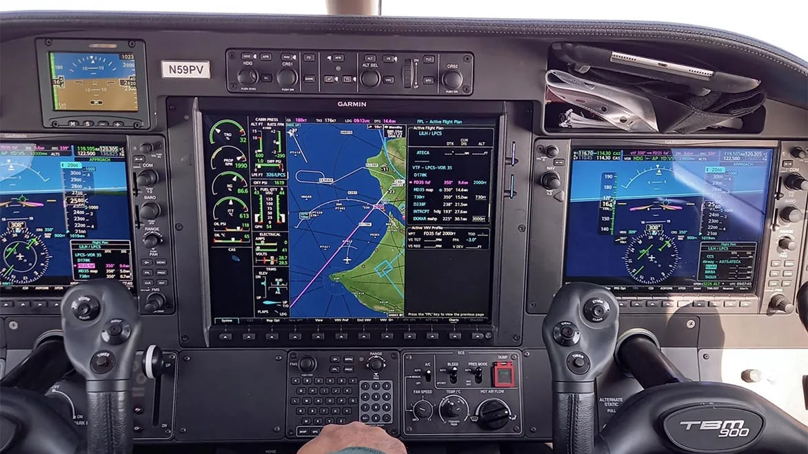
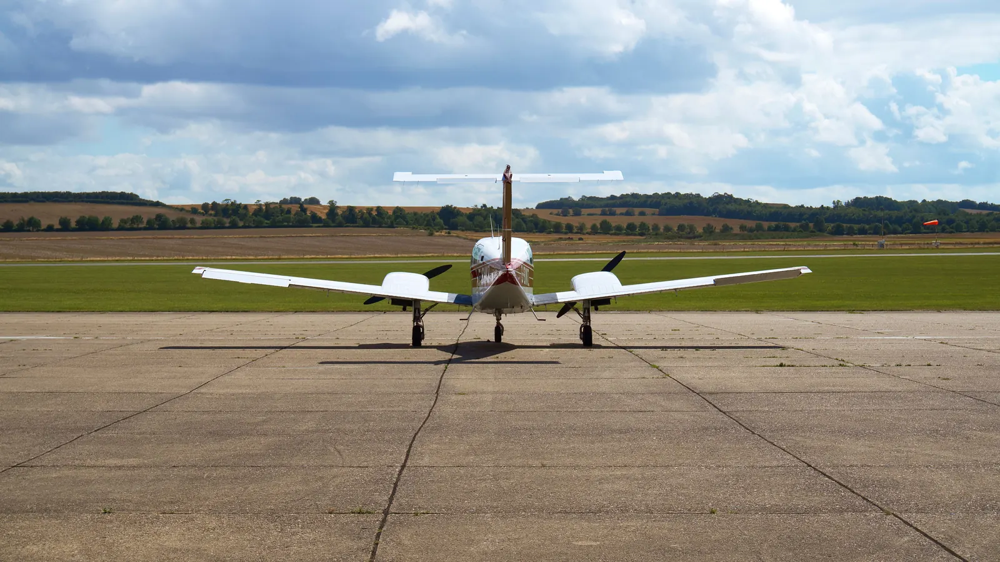
Also in airline operations
Flight Dispatcher & Airline OCC Training Cabin Crew Professional Training Explore all aviation training05 — Training programmes
73 programmes. 10 fields.
Tailor-made programmes for governments, institutions, companies and individual participants — delivered in Türkiye, in your own country, or as a combination built around your team.
Three ways to learn with us
- Open to everybody
Open Trainings
Intensive, English-language short courses in Türkiye — no formal entry requirements. Meet peers from across the world.
- Duration
- 10 days – 2 weeks
- Group
- 40–60 participants
- Built for your group
Training Programs
From Mini MBA and Leadership to Agriculture, E-Government and Medical certifications — tailor-made for your group.
- Catalogue
- 73 programmes
- Fields
- 10
- Delivered to you
In-House Trainings
World-class programs adapted to your business and delivered anywhere — your offices, your city, your schedule.
- Where
- Your venue
- When
- Your schedule
06 — Just completed
Global Leadership Conference 2026
Empowering Digital Transformation in Education — Leveraging World Emerging Technologies and Partnerships.
Turkey Trainings served as Programme Director for GLC 2026 in Istanbul, leading programme design, institutional sessions, moderation, academic quality and certification for a delegation of Nigerian college leaders.
- When
- 4–8 August 2026
- Where
- Istanbul, Türkiye
- With
- Committee of Provosts, Nigeria Colleges of Education
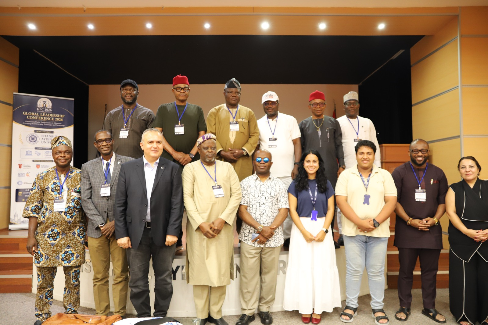
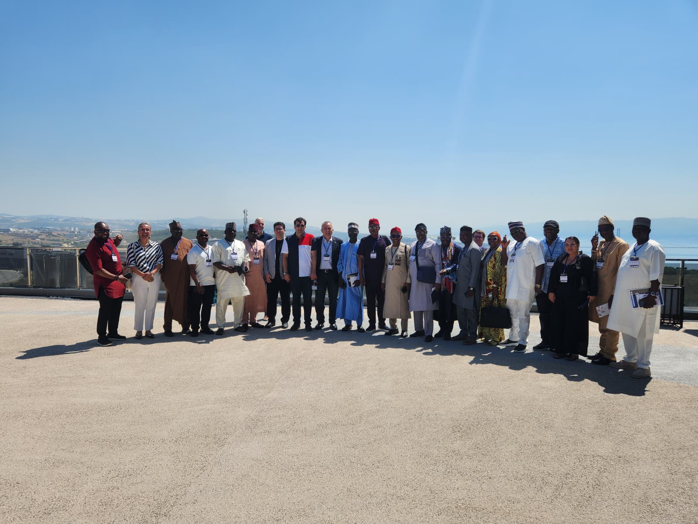
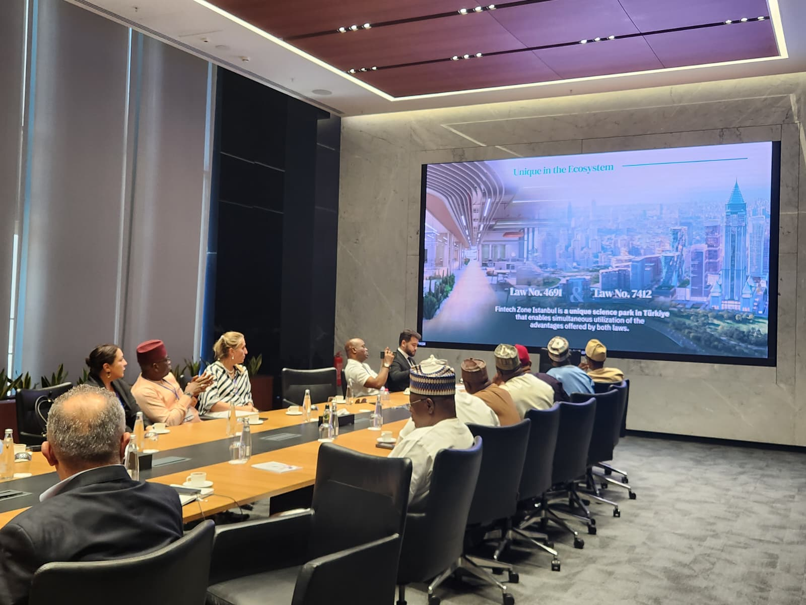
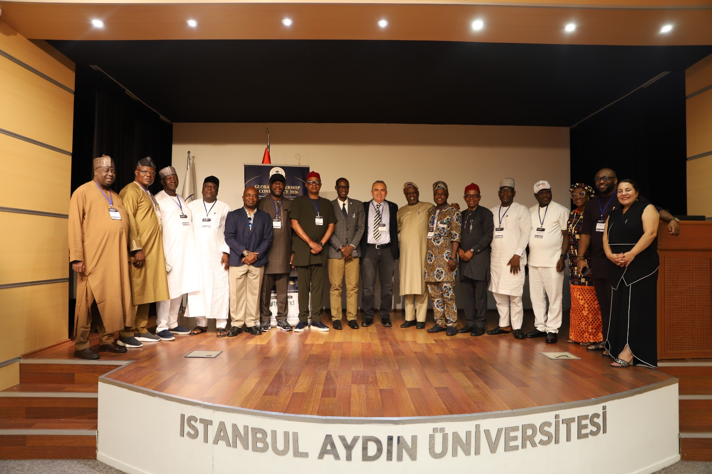
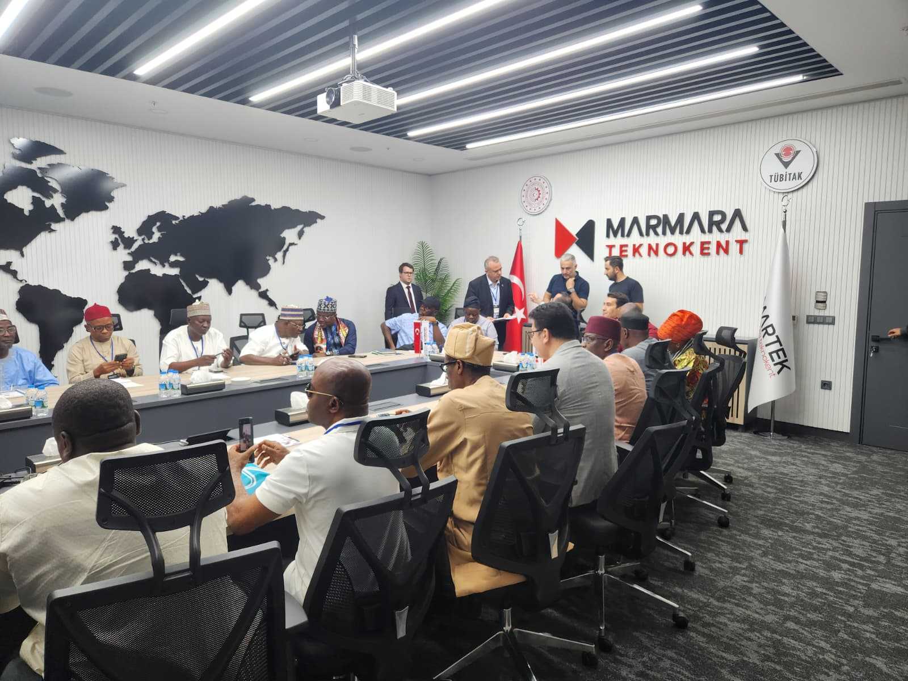
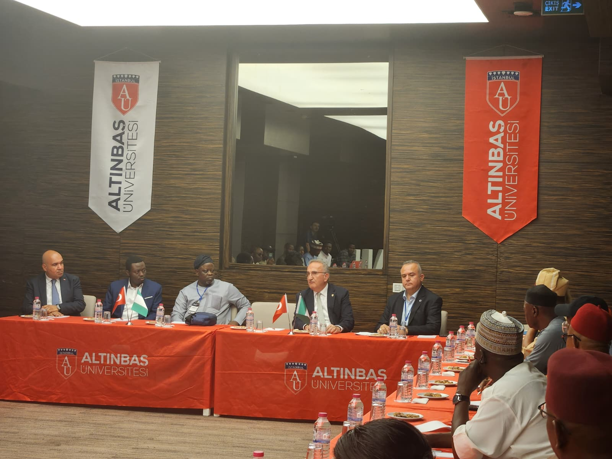
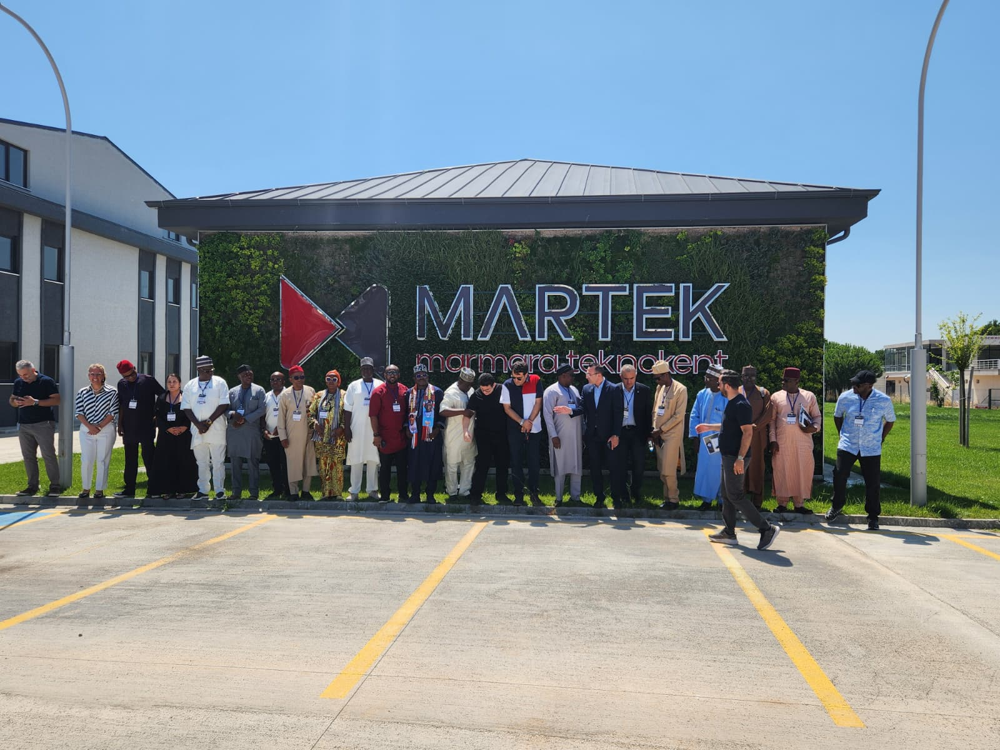
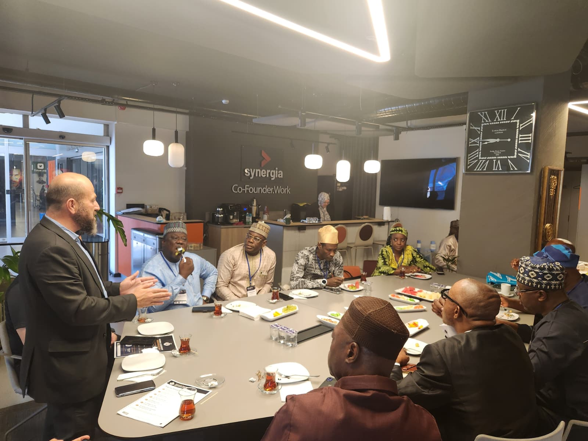
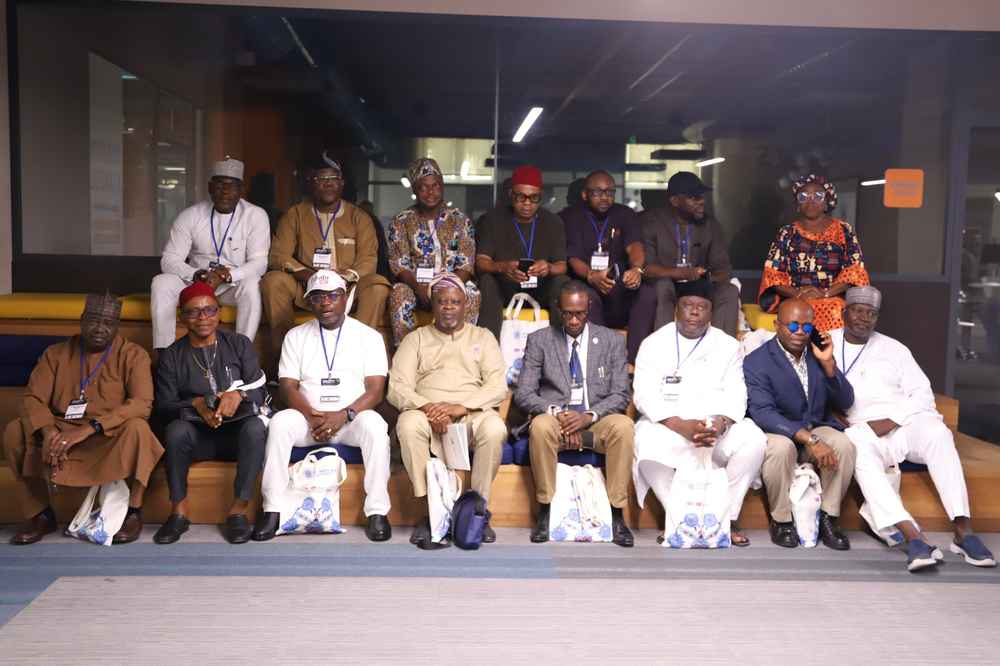
GLC 2026 · IstanbulDrag, or keep scrolling
07 — See us at work
Filmed with the people who were actually there.
AFROTURK TV — official media partnerOpen the full video library →
08 — The people behind Turkey Trainings
Three co-founders, personally involved.
Süreyya Ümran Alınak
Co-Founder & CEOHas managed thousands of events across the tourism and event management sector for over 26 years. Leads Turkey Trainings’ vision, international partnerships and growth.
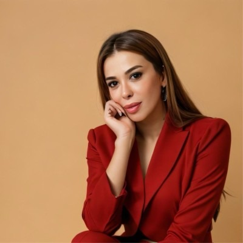
Seda Diker
Co-Founder & Managing PartnerHolds a BA in American Culture and Literature from Bilkent University and has nearly 20 years of experience managing large-scale EU-funded projects.
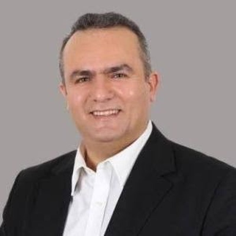
Dr. Yavuz Selim Sılay, MD, MBA
Co-Founder & Education DirectorPhysician, executive and educator. Designs our curricula, selects our academic partners and leads our flagship international programs.
09 — Arrival
Every programme is tailor-made for your group.
No fixed prices. We design the perfect program for your team’s needs and budget.